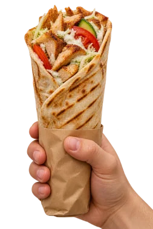
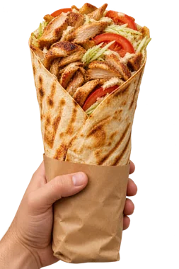
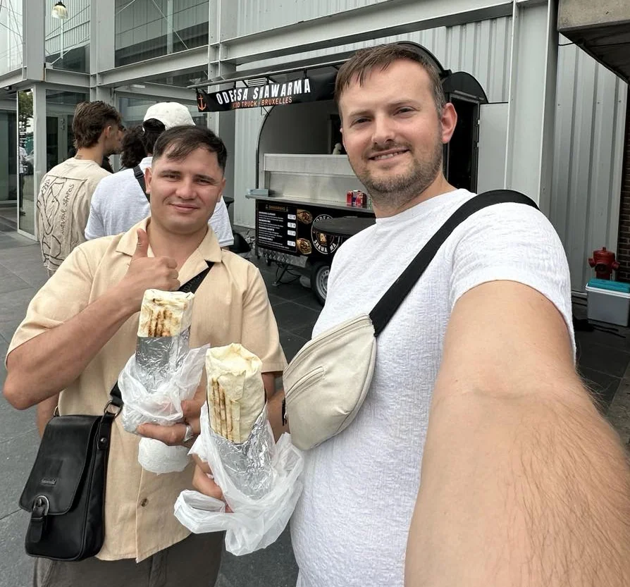
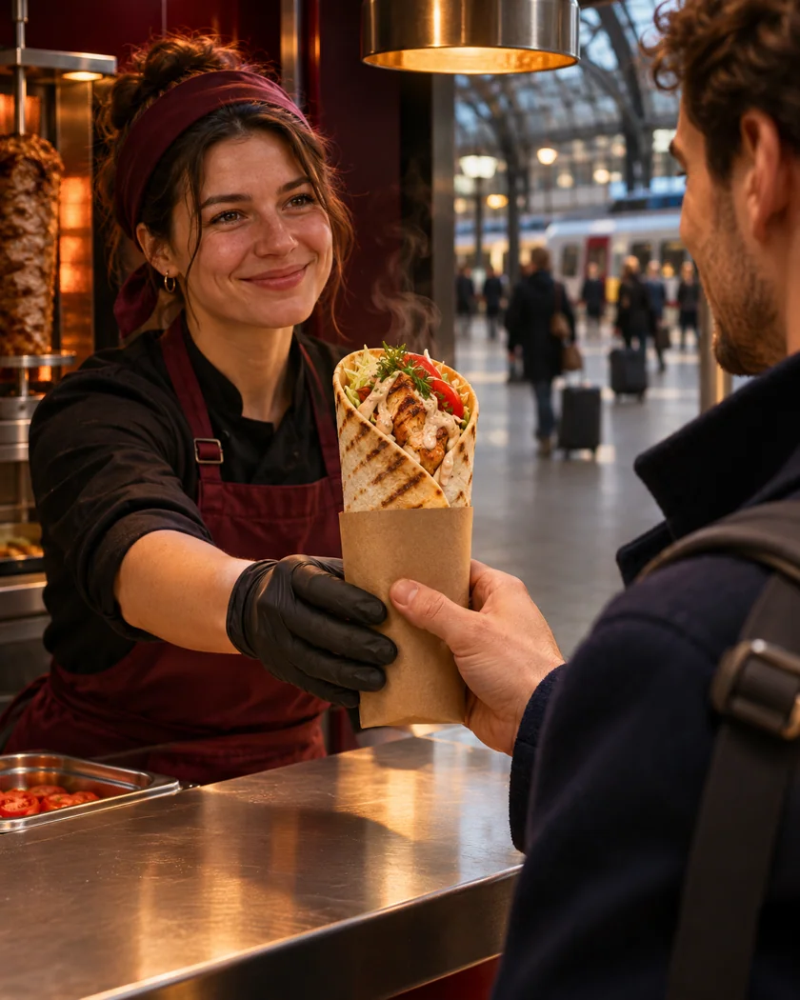
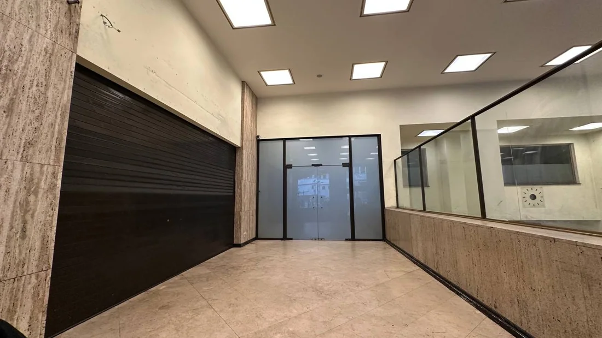
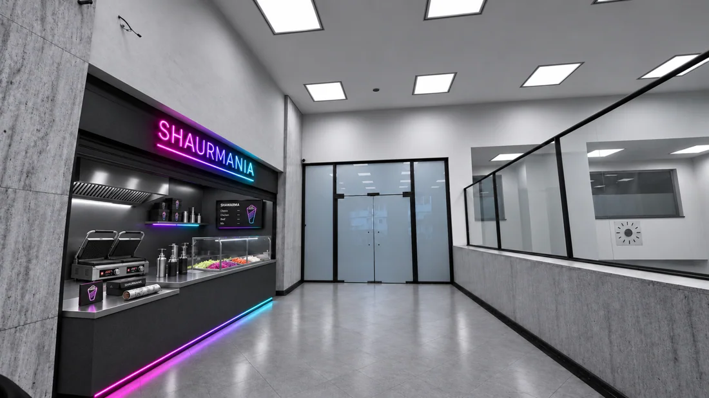

Vishnya House
Досвід роботи на ресторанній кухні та організації щоденного сервісу.
Авторські соуси й тонкий лаваш із гриля.
Особливий для Бельгії смак у самому центрі Брюсселя.
Мариноване філе, свіжі хрусткі овочі й авторські соуси загортаємо в лаваш і підсмажуємо до хрускоту.


Курка з гриля, капуста, помідор, огірок і часниково-йогуртовий соус у пшеничному лаваші.

Подвійна порція курки з гриля, ті самі свіжі овочі й часниково-йогуртовий соус.

Класична начинка з куркою, овочами й часниково-йогуртовим соусом у меншому лаваші.

Фалафель, хумус із тахіні, капуста, огірок, помідор і зелень. Лаваш без молока та яєць.
До поїзда чи додому. Пакування зручно тримати однією рукою в дорозі чи в поїзді. Фольга допомагає зберегти тепло дорогою додому.

Ми вже працюємо в ресторанному бізнесі Бельгії. Наші стандарти щоденної роботи — уважне обслуговування, стабільна якість страв і чистота на кухні.
Досвід роботи на ресторанній кухні та організації щоденного сервісу.
Супроводжували відкриття ресторану: закупили обладнання, налагодили роботу з постачальниками та розробили меню.
В Україні ми тривалий час працювали біля станцій метро. Саме для пасажира, який має кілька хвилин до відправлення, ми й побудували цей формат.
Маринуємо філе, готуємо власні соуси й підрум’янюємо лаваш. Міні підійде для перекусу, подвійна — для ситного обіду.
Обрали контактний гриль, щоб обмежити поширення запахів. Передбачаємо окремі зони для сирих і готових продуктів та прибирання протягом зміни.
Гаряча українська шаурма доповнює вибір поруч із бельгійськими сендвічами, бургерами, вафлями та випічкою.



Коротке меню полегшує вибір у годину пік. Знайомий смак і передбачуваний сервіс дають пасажирам привід повертатися.
Мінімалістичний фасад, неонова вивіска та дерев’яні вставки. Матеріали й освітлення погодимо з SNCB.
Беремо зобов’язання працювати в усі погоджені години, дбати про майно станції й тримати прохід для пасажирів вільним.